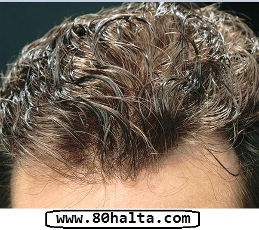

دۆلىتىمىزتىكى 50%ئادەمنىڭ باش تېرىسى ساغلام ئەمەس
باش تېرىسى ياغلىق بولۇشنىڭ 6 خىل سىرى
ئىلاۋە :دۇنيا سەھىيە تەشكىلاتىنىڭ 10 تۈرلۈك ساغلاملىق ئۆلچىمىنىڭ توققۇزىنجىسى چاچ پاقىراق بولۇش ، كىپەك بولماسلىق . باش تىرىسىنىڭ ساغلام بولۇشى تەننىڭ ساغلاملىقىغا چىتىلىدۇ ، جوڭگودا يېرىمدىن كۆپرەك قۇرامىغا يەتكەنلەرنىڭ باش تېرىسى ساغلاملىقىدا مەسىلە بار . باش تېرىسىنى چاچ دائىم يېپىپ تۇرغانلىقتىن دىققەت قىلمىسا بولمايدىغان بىر ‹سىرلىق بەلباغ› قا ئايلىنىپ قالدى .
‹سىرلىق بەلباغ›نىڭ سىرىنى ئېچىش
بىز ئادەتتە قولىمىز ئارقىلىق ھېس قىلىدىغان قىسمىمىز بولسا باشنىڭ تېرە قەۋىتى ، بۇ قەۋەت كۆپ قىسىم باش تېرىسىنى ئاسرايدىغان مەھسۇلاتلار ئاسرىيالايدىغان قىسىم . باش تېرىسىنىڭ ئەڭ سىرتقى قەۋىتىدە تېرە ياغلىق قەۋىتى ۋە نورمال پايدىلىق باكتىرىيە بىلەن شەكىللەنگەن مۇداپىئە سىستېمىسى بولۇپ ، سىرتقى غەيرى ماددىلارنىڭ بۇزغۇنچىلىقىدىن ساقلايدۇ .
ساغلام باش تېرىسىنىڭ رەڭگى سەل سارغۇچ گۆش رەڭگىدە بولىدۇ.
ساغلام باش تېرىسىنىڭ رەڭگى سەل سارغۇچ گۆش رەڭگىدە بولىدۇ،تېرە ئاستىغا كۆپلىگەن تېرە ياغ بەزلەر ، تەر بېزى ۋە تۈمەنلىگەن تۈك خالتىسى توپلاشقان . تۈك خالتىسىنىڭ سانى ۋە زىچلىقى ئادەم تۇغۇلغان ۋاقىتتا ئاللىبۇرۇن مۇقىملىشىپ بولغان ، ھەر بىر تۈك خالتىسىدىن ئادەم ئۆمرىدە تەخمىنەن 20 تال چاچ ئۆسىدۇ .
شۇڭلاشقا ئادەم قۇرامىغا يەتكەندىن كېيىن باش تېرىسىدىكى تۈك خالتىسىڭ سانى كۆپەيمەيدۇ ، ئەكسىچە بارغانسېرى ئازلاپ بارىدۇ . نورمال باش تېرسىنىڭ مىتابولىزىمى 16-25 كۈنگىچە ، ھەركۈنى تەخمىنەن 40-100تالغىچە چاچ چۈشۈپ تۇرىدۇ . ئەگەر ئۆزىمىزنىڭ باش تېرىمىزنىڭ ھازىرقى ئەھۋالىنى تېخىمۇ ئېنىق بىلسەك ، باش تېرىمىزنىڭ ئەھۋالىنى ئانالىز قىلىپ باقساق ،ئاندىن ئۆزىمىزنىڭ باش تېرىمىزنىڭ ساغلاملىقىغا پايدىلىق بولغان ئاسراش مەھسۇلاتلىرىنى توغرا تاللىيالايمىز.
مۇتەخخەسىسلەرنىڭ باش تېرىسىگە ئائىت 6 چوڭ مەسىلىنى چۈشەندۈرۈشى
1. كىپەك يوقۇتۇش چاچ ئاسراش ئىلمىنتىنى 去屑护发素 باش تېرىسىگە سۈرۈش (تەككۈزۈش) كرەك.
كىپەك يوقۇتۇش ئىقتىدارى بولمىغان چاچ ئاسراش ئېلمىنتنىڭ باش تىرىسگە نىسبەتەن ھېچقانداق رولى بولمايدۇ ، شۇڭا ئۇنى باشنىڭ تىرىسگە تەككۈزۈش بىھاجەت . ئەمما كىپەك يوقۇتۇش ئىقتىدارى بولغان چاچ ئاسراش ئېلمىنتىنى چوقۇم باشنىڭ تىرىسىگە تەككەن ۋاقىتتىلا ئاندىن ئۇنىڭ كىپەك يوقۇتۇش ئۈنۈمى كۆرۈلۈدۇ ، شۇڭلاشقا باش تېرىسىگە سۈرۈش كېرەك .

2. باش تىرىسىنىڭ ياغلىق بولۇشى بەدەندىكى ھورمۇن ئېلمىنتلارنىڭ قالايمىغانلىقىتىندۇر.
تىرە ياغ بەزلىرىنىڭ قانچىلىك ياغ ئاجرىتىپ چىقىرىدىغانلىقىنىڭ ئاساسلىق سەۋەبى ئىرسىيەت گىنىگە مۇناسىۋەتلىك ،ھەمدە ئىچكى ھورمۇنلارنىڭ تەڭپۇڭلۇقىغا ئەگىشىپ ئۆزگۈرۈپ تۇرىدۇ . ئاساسلىق ئىپادىسى ياشنىڭ چوڭىيىشىغا ئەگىشىپ ياغ مىقتارى ئازلاپ بارىدۇ . شۇڭلاشقا ياخشى بولغان ئارام ئېلىش ۋە يېمەك ئىچمەك ئادىتى تىرىدىكى مايلىق ئادەتتنى يەڭگىللىتىشكە پايدىلىق .
3. باش تىرىسىنىڭ قىچىشىشى پەقەت باش تىرىسىدىكى كىسەللىك بولۇپلا قالماستىن يەنە پەسىلگىمۇ مۇناسىۋەتلىك .
.ئادەتتە چاچنى دائىم نورمال يۇيۇپ تۇرساقمۇ يەنىلا باش قىچىشىش كۆرۈلىدۇ ، بۇنىڭ سەۋەبى باكتىرىيەلەر كەلتۈرۈپ چىقارغان غىدىقلاش ئىنكادىسدۇر، بۇ ھەرگىزمۇ پاكىزلىققا ئەھمىيەت بەرمىگەنلىكتىن ئەمەس ، بۇنداق ۋاقىتتا ئەڭ ياخشىسى چاچ يۇيۇش سۈيۇقلۇقىنى ئالماشتۇرغۇلۇق . ئەگەر پەسىل خاراكتىرلىك باش قىچىشىش كۆرۈلسە بۇ بەدەننىڭ سەزگۈرلۈكى ئىشىپ كەتكەنلىكتىندۇر، بۇ ۋاقىتتا كەيپىياتنى تەڭشەشكە، كۆڭلىمىزنى ئەركىن قويۇۋىتىشكە ئەھمىيەت بەرمەك زۆرۈر.
4. باش يۇيغان ۋاقتىمىزدا تىرناق بىلەن تاتىلىماسلىق لازىم .
تىرناق بىلەن تاتىلىغاندا ئاسانلا باش تىرىسىنى زەخمىلەندۈرۈپ قويىمىز، زەخمىلەنگەندىن كېيىن ياللۇغلىنىشنى كەلتۈرۈپ چىقىرىپ باش تىرىسى مەسىلىسىنى تېخىمۇ ئېغىرلاشتۇرۇۋىتىدۇ ، ئېھتمال يەنە باش تېرىسنىڭ سويۇلۇپ چاچلارنىڭ چۈشۈپ كېتشىنى كەلتۈرۈپ چىقىرىشىمۇ مۇمكىن . چاچ يۇيۇش مەھسۇلاتلىرىنى ئىشلەتكەن ۋاقىتتا توغرا بولغان ئىشلىتىش ئۇسۇلى : ئالقىنىمىزدا يەڭگىل ئۇۋلاپ ماغزاپ چىقىرىپ ئاندىن بارماقلىرىمىز بىلەن بېشىمىزنى ئۇۋۇلاپ بەرسەك بولىدۇ، بۇنداق بولغاندا پاكىزلاش ھەم كىپەك يوقۇتۇش ئۈنۈمىگە ئېرىشەلەيمىز.
5. باش تىرىسى بەدەندىكى ئىككىنجى نىپىز تىرە.
باش تىرىسىنىڭ قىلىنلىقى ئادەتتە تاپان تىرىسىنىڭ قىلىنلىقىنىڭ 50دىن بىر (1/50) چىلىككە توغرا كېلىدۇ ،شۇنداقلا كۆز قاپاق تىرىسىدىن قالسا بەدەندىكى ئىككىنجى نىپىز تىرە ھىساپلىنىدۇ. شۇڭلاشقا كۆز قاپاق تىرىمىزغا ئوخشاش باش تىرىمىزمۇ كۆڭۈل قويۇپ ئاسراشقا موھتاج.
6. سەل قارىلىدىغان ‹زىيانكەشلىك›
خىزمەت ۋە تۇرمۇش رىتىمىنىڭ تىزلىشىشى كېشىلەرگە تېخىمۇ چوڭ بېسىملەرنى ئىلىپ كەلدى ، روھى بېسىملەرنىڭ ئەڭ ئاۋۋال تەسىر قىلىدىغان يېرى ئادەمنىڭ بېشى ، ئەڭ ئاۋۋال كۆرۈلىدىغان ئىپادىسى دەل باش تىرىسىدە مەسىلە كۆرۈلۈشى . ئادەتتىكى دائىم كۆرۈلۈدىغان مەسىلىلەر بىلەن بولغان پەرقى شۇكى ، باش تىرىسى مەسىلى ئادەتتە ئانچىۋالا روشەن بولمايدۇ، كۆپلىگەن كىشىلەر باش تىرىسىدا ئاللىبۇرۇن كىسەللىك ئالامەتلىرى كۆرۈلسىمۇ ئەمما روشەن ئىپادىلەنمىگەنلىكتىن بىلەلمەيدۇ. باش تىرىسدە كىپەكلىشىش ، قىچىشىش ، قۇرغاقلىشىش ،مايلىشىش ، چىمىلداپ ئاغرىش قاتارلىق مەسىلىلەرنىڭ كۆرۈلۈشى دەل باش تىرىسىنىڭ نورمالسىزلىقتىن كېلىپ چىققان يىغىندى ئىپادىسى .
بۇلغانغان سىرتقى مۇھىتمۇ باش تىرىسىغا بېسىم ئېلىپ كېلىدۇ ، سىرتقى بۇلغانما ماددىلارنىڭ كېلىش مەنبەسى ئاساسلىقى تۆت خىل ، باش تىرىسىدىكى مۆڭگۈز ماددىسى ،كىپەك پارچىسى ۋە تەر سۈيۈقلۇقى تەركىبىدىكى ماددىلار؛ باكتىرىيە قاتارلىق مىكرو ئورگانىزىملار تىرە ياغلىرىنى پارچىلىغاندىن كېيىنكى چىقىرىندى ماددىلار (مىتابولىزىمنىڭ قالدۇق ماددىلىرى)؛باش تىرىسىغا ئولتۇرۇشۇپ قالغان ھەرخىل مىرو زەررىچىلەر ،دانچىلار ۋە بۇلغانما ماددىلار ؛ چاچ ئاسراش مەھسۇلاتلىرىنىڭ قالدۇقلىرى.
باش تىرىسى ئاسراش تەدبىرلىرى :
بىرىنچى خىل ئۇسۇل :
مۇتەخخەسسىسلەرنىڭ قارىشىچە ، قۇرامىغا يەتكەن يېرىمدىن كۆپرەك كىشى كىپەكلىشىشنىڭ ئاۋارىچىلىقىغا ئۇچرايدىكەن . باش تىرىسى ساغلام بولغان ۋاقىتتا ، چۈشۈپ كەتكەن ھۈجەيرىلەرنى (يەنى چاچتىكى كىپەكلەرنى )بىز ھېس قىلالمايمىز ھەم كۆرەلمەيمىز. ئەمما باش تىرىسىدە مەسىلە كۆرۈلگەن ۋاقىتتا پوستىلاق قەۋىتى (سىرتقى تىرە قەۋىتى ) ياخشى يىتىلەلمەيدۇ ،شۇڭلاشقا كۆپ مىقداردا تىرە قەۋىتى چۈشۈپ چۈشۈپ كېتىش – ‹كىپەك › كۆرۈلىدۇ . كىپەك بولسا بىر خىل باش تىرىسىدىكى ياخشى خارەكتىرلىك قاسراقسىمان كىسەللىك ، كۆپ قىسىم كىسەللىك كەيپىياتنىڭ جىددىيلىشىشى ، يېمەك –ئىچمەك ئادىتىنىڭ ياخشى بولماسلىقى ،ھاراق ئېچىش ، ئىچكى ئاجراتمىلارنىڭ تەڭپۇڭسىزلىقى قاتارلىقلاردىن كېلىپ چىقىدۇ . شۇڭلاشقا تۇرمۇشتىكى قالايمىقان ناچار ئادەتلەرنى ئۆزگەرتكەندىن باشقا يەنە باش تىرىسىنى كۆڭۈل قويۇپ ئاسراش لازىم .
ئىككىنجى خىل ئۇسۇل :
باش تىرىسىنىڭ مايلىق بولۇشى بىرقىسىم كىشىلەرنى بىئارام قىلىدۇ ، ھەرھالدا ياخشى ، ئۇلار قۇرامىغا يەتكەنلەرنىڭ ئاران 5%تىنى ئىگەللەيدۇ . نۇرغۇنلىغان كىشىلەر بېشىنى سىلىغان ۋاقىتتا سىرق مايسىمان كىپەك كۆرۈلىدۇ ، نۇرغۇن كىشىلەر بۇ ۋاقىتتا چاچ يۇيىدىغان ۋاقتىم كەپتۇ دەپ ئويلايدۇ ، ئەمەلىيەتتە بۇ مايلىشىش خاراكتىرلىك تىرە ياللۇغىنىڭ بىرخىل ئالامىتى يەنى باش تىرىڭىز ماي ئاجرىتىپ چىقىرىشى ئېغىر دەرىجگە يەتكەنلىكىنىڭ ئىپادىسى . ئاجىز باش تىرىمىز تەڭشەشكە، ماي تەڭپۇڭلىقىنى ساقلاشقا ،نورمال بولغان مۇھىتقا موھتاج .
________________________________________________
80خالتا بلوگى ئۈچۈن: ئۇيغۇر تەرجىىسى

bunisakayitkilibolamdu
2012/11/16
bunisakayitkilibolamdu
2012/11/16